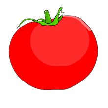
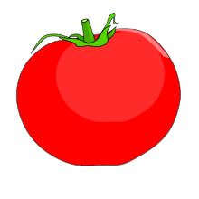

Agricultura > Tomate
TOMATE 
Clima
TOMATE 
Clima
O tomateiro é originário da costa oeste da América do Sul, onde as temperaturas são moderadas (médias de 15 ºC a 19 ºC) e as precipitações pluviométricas não são muito intensas. Entretanto, floresce e frutifica em condições climáticas bastante variáveis. A planta pode desenvolver-se em climas do tipo tropical de altitude, subtropical e temperado, permitindo seu cultivo em diversas regiões do mundo.
Plantio
As sementes de tomate podem ser semeadas diretamente no local definitivo ou em sementeiras, copos ou saquinhos de plástico ou papel, com cerca de 10 cm de altura e 7 cm de diâmetro. Coloque de duas a cinco sementes em cada recipiente, a no máximo 1 cm de profundidade, deixando posteriormente apenas uma ou duas plantas por recipiente, mantendo as mudas que são mais vigorosas. O transplante das mudas de tomate é realizado quando as mudas atingem de 15 cm a 25 cm de altura, e no transplante parte do caule pode ser enterrado para propiciar o surgimento de mais raízes. O espaçamento recomendado varia amplamente e depende da variedade cultivada e das condições de cultivo. Em geral, as cultivares de hábito indeterminado podem ser cultivadas com um espaçamento de 50 cm a 1,6 m entre plantas, e as cultivares de hábito determinado podem ser cultivadas com um espaçamento de 50 cm a 1 m entre plantas. Cultivares anãs podem ser plantadas com um espaçamento de 30 cm entre as plantas. Os tomateiros podem ser plantados em vasos, jardineiras, cestas suspensas, sacos plásticos com terra e outros tipos de recipientes, mas a cultivar a ser plantada deve ser escolhida de forma a adequar o tamanho da planta com o tamanho do recipiente. Em vasos grandes é possível plantar a maioria das cultivares, senão todas, mas as plantas podem ter seu tamanho e sua produtividade limitadas. Há cultivares de porte anão que podem ser cultivadas até mesmo em vasos relativamente pequenos, e que além de produzir frutos, também são bastante ornamentais.

Caramanchão com tomateiro
Produção
Região Produtora
Do campo diretamente à mesa, ou como matéria-prima, o tomate é fonte de emprego e renda. Apenas a indústria movimenta R$ 3,2 bilhões anuais. Goiás é o principal produtor do país, com 12,3 mil hectares de área plantada com a variedade específica para processamento. É uma atividade que gera sete empregos diretos por hectare.
Somente uma fazenda, cujos donos preferem que não seja identificada, a 100km do Distrito Federal, colhe 1.200 toneladas de tomates diariamente. Isso equivale a 60 caminhões do produto, entregues para a indústria no prazo de uma hora, ainda frescos. É um nível de eficiência difícil de encontrar até mesmo em países desenvolvidos.
No Distrito Federal, o cultivo de tomate envolve 383 produtores, a maioria deles de pequeno porte, responsáveis por uma produção de 26.750 toneladas em 2016. Neste ano, entre janeiro e agosto, já são 25.295 toneladas produzidas na capital, de acordo com a Empresa de Assistência Técnica e Extensão Rural do Distrito Federal (Emater-DF).
Combate à Pragas
Estudo sobre pragas do tomateiro feito pela Universidade Federal de Minas Gerais (UFMG)